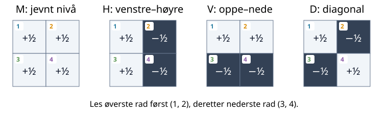
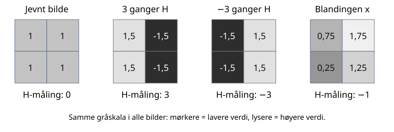

Uke 4 – Ortogonalitet, QR og minste kvadrater
Ukens spørsmål
Hvordan kan ett tall fortelle hvor mye av en vektor som peker i en valgt retning? Dette spørsmålet leder oss fra indreprodukt og ortogonalitet til projeksjoner, Gram–Schmidt, QR-faktorisering og minste kvadraters metode.
Vi begynner med piler i planet. Deretter bruker vi nøyaktig den samme ideen som en mønsterdetektor for \(2\times2\)-bilder fra uke 3. Til slutt lager vi ortogonale retninger selv og undersøker hva som skjer når kolonner er avhengige eller nesten avhengige.
Piler, bilder og polynomer – samme struktur
Denne uken møter vi ulike objekter: en pil i planet, et bilde og et polynom. De ser forskjellige ut, men har en felles matematisk struktur: Vi kan legge dem sammen og gange dem med tall. Derfor kan vi behandle dem som vektorer og bruke de samme ideene om byggesteiner, retninger og koordinater.
Vi beholder ofte det uformelle ordet «pil» for å holde fast i denne intuisjonen. En pil representerer selve objektet – noe med størrelse og retning – mens koordinatene forteller hvordan vi bygger det i en valgt basis. For et bilde kan «retning» være et bestemt kontrastmønster; for et polynom kan det være en bestemt polynomform. Å gange med et tall endrer mengden av dette mønsteret eller denne formen. Vi trenger ikke kunne tegne en vanlig pil for å bruke denne tankegangen.
Når vi senere snakker om lengde og vinkel, må vi også velge hvordan de skal måles. Det er indreproduktet som gir oss denne måleregelen.
Begreper
- indreprodukt, norm og enhetsvektor
- ortogonale og ortonormale vektorer
- ortogonal projeksjon og residual
- klassisk og modifisert Gram–Schmidt
- QR-faktorisering og minste kvadrater
Etter denne uken
Du skal kunne bruke et indreprodukt som en retningsmåler, forklare hvorfor \(x^Tq=0\) betyr at \(x\) og \(q\) er ortogonale, og konstruere en ortonormal basis med Gram–Schmidt. Du skal også kunne diagnostisere eksakt og nesten lineær avhengighet, sammenligne klassisk og modifisert Gram–Schmidt og tolke en minste-kvadraters løsning som en ortogonal oppdeling av dataene.
Kort løype
I forelesningen følger vi hovedløypa:
- dra den blå retningsmåleren og oppdag fortegn og null;
- finn regneregelen \(x^Tq\);
- bruk regelen til å oppdage bildemønstre;
- fjern én retning og bygg Gram–Schmidt;
- se algoritmen møte avhengige kolonner;
- sammenlign klassisk og modifisert Gram–Schmidt;
- bruk \(A=QR\) til minste kvadrater.
De merkede fordypningene gir flere forklaringer og eksperimenter for selvstudium.
Slik bruker du siden
JSXGraph-figurene brukes til å dra, se og lage hypoteser. Pyodide-cellene gjentar forsøkene med tall og lar oss teste mange tilfeller. Figurene og Python-cellene deler ikke variabler; derfor står nødvendige tall og matriser på nytt ved hvert forsøk.
Alle vektorer skrives som kolonner på papir. I NumPy lagres den samme vektoren som en endimensjonal array. Dermed svarer x @ q til matriseproduktet \(x^Tq\).
For \(x,q\in\mathbb R^m\) bruker vi
\[x^Tq=\sum_{i=1}^m x_iq_i, \qquad \lVert x\rVert_2=\sqrt{x^Tx}.\]
| På papir | NumPy | Betydning |
|---|---|---|
| \(x^Tq\) | x @ q |
indreprodukt, ett tall |
| \(Ax\) | A @ x |
matrise ganger vektor |
| \(A^T\) | A.T |
transponert matrise |
| \(\lVert x\rVert_2\) | np.linalg.norm(x) |
euklidsk vektornorm |
| \(\lVert A\rVert_F\) | np.linalg.norm(A) |
Frobeniusnorm for en matrise |
| \(\lVert A\rVert_2\) | np.linalg.norm(A, 2) |
spektral matrisenorm |
Når vi skriver et \(2\times2\)-bilde som en vektor, leser vi radene fra venstre mot høyre. Denne rekkefølgen er den samme som X.reshape(-1).
Hvor mye går vi i en valgt retning?
Vi starter med forskyvningen
\[x=\begin{bmatrix}3\\2\end{bmatrix}.\]
Det er lett å lese at vi går \(3\) enheter mot høyre og \(2\) enheter opp. Men hvor mye går vi i en skrå retning?
Før vi velger målepil, trenger vi å vite hva lengden til en pil er. For \(x=(3,2)^T\) gir Pytagoras
\[\text{lengden til }x=\sqrt{3^2+2^2}=\sqrt{13}.\]
Denne lengden kalles den euklidske normen og skrives \(\lVert x\rVert_2\). For en pil \(v=(v_1,v_2)^T\) betyr notasjonen altså
\[\lVert v\rVert_2=\sqrt{v_1^2+v_2^2}.\]
Normen er ett ikke-negativt tall. Dette er samme lengdebegrep som i uke 3.
Prøv nå pilene \((1,0)^T\) og \((0,1)^T\): Begge har lengde \(1\). En slik pil kalles en enhetsvektor. Vi velger en enhetsvektor \(q\) som målepil, slik at størrelsen på målepilen er den samme når vi skifter retning. Når vi framhever denne rollen, bruker vi også ordet enhetsretning.
Alle piler med lengde \(1\) som starter i origo, ender på en sirkel med radius \(1\): enhetssirkelen. Dra punktet \(q\) rundt sirkelen i figuren. Den tynne blå hjelpelinjen viser retningen til \(q\). Følg den stiplede linjen fra enden av \(x\) vinkelrett bort til hjelpelinjen. Treffpunktet er merket \(P\).
Hvor langt ligger \(P\) fra origo, målt langs \(q\)? Vi kaller dette tallet komponenten av \(x\) langs \(q\), og skriver det som \(c\). Tallet har fortegn: positivt i samme retning som \(q\), negativt i motsatt retning. Mot høyre får vi \(c=3\); oppover får vi \(c=2\). Her er komponenten ett tall; senere bruker vi tallet til å bygge en pil.
Den oransje buen viser vinkelen \(\theta\) fra positiv vannrett akse til \(q\), målt mot klokken fra \(0^\circ\) til \(360^\circ\). Denne vinkelen bruker vi snart til å finne regneregelen.
Prøv dette før du leser videre:
- Sett \(q\) mot høyre. Hvorfor blir komponenten \(3\)?
- Sett \(q\) oppover. Hvorfor blir den \(2\)?
- Finn retningen som gir størst positiv komponent.
- Finn en retning som gir komponent \(0\) uten at \(x\) er null.
- Snu \(q\) motsatt vei. Hva skjer med fortegnet?
Finn regneregelen
Skriv enhetsretningen som vektoren
\[q=\begin{bmatrix}q_1\\q_2\end{bmatrix},\qquad q_1^2+q_2^2=1.\]
Likningen til høyre er lengdekravet fra starten av fanen: \(\lVert q\rVert_2=\sqrt{q_1^2+q_2^2}=1\).
Hvor mye bidrar et vannrett og et loddrett skritt?
La \(\theta\) være vinkelen fra den positive vannrette aksen til den blå målepilen. På enhetssirkelen har pilen koordinatene
\[q=\begin{bmatrix}\cos\theta\\\sin\theta\end{bmatrix}.\]
Dette er den vanlige trekantregelen: cosinus gir vannrett komponent og sinus gir loddrett komponent når hypotenusen har lengde én.
Se først på en skrå retning mellom høyre og opp. Vi deler turen i to etapper og spør om hver av dem: Hvor mye av denne bevegelsen går i retningen \(q\)?
Første etappe: tre enheter mot høyre. Tegn først bare ett vannrett skritt fra origo. Fra endepunktet trekker vi en linje vinkelrett mot retningen \(q\), på samme måte som den stiplede linjen i figuren. Vi får en rettvinklet trekant: Skrittet er hypotenusen med lengde \(1\), og siden langs \(q\) ligger inntil vinkelen \(\theta\). Derfor er
\[\cos\theta =\frac{\text{delen langs }q}{1}, \qquad \text{delen langs }q=\cos\theta.\]
Tre slike skritt gir tre ganger dette bidraget: \(3\cos\theta\).
Andre etappe: to enheter opp. Et loddrett skritt danner vinkelen \(90^\circ-\theta\) med \(q\). Den samme trekantberegningen gir \(\cos(90^\circ-\theta)=\sin\theta\) i retningen \(q\) per skritt. To skritt gir derfor \(2\sin\theta\).
Hele turen. Den andre etappen begynner der den første slutter. I hver etappe kan vi skille mellom bevegelse langs \(q\) og bevegelse på tvers av \(q\). Delene på tvers gir ingen framgang i retningen \(q\). Dermed er den samlede komponenten summen av bidragene langs \(q\):
\[c= \underbrace{3\cos\theta}_{\text{fra turen mot høyre}} +\underbrace{2\sin\theta}_{\text{fra turen opp}}.\]
Prøv \(\theta=0^\circ\), \(90^\circ\) og \(45^\circ\) i figuren. Vi får henholdsvis \(3\), \(2\) og \(5/\sqrt2\approx3.54\). Når målepilen dreies videre, gir fortegnene til cosinus og sinus automatisk negative bidrag der bevegelsen går mot måleretningen.
Siden \(q_1=\cos\theta\) og \(q_2=\sin\theta\), er dette nettopp \(3q_1+2q_2\). Den generelle regelen nedenfor er den samme oppskriften for \(x_1\) vannrette og \(x_2\) loddrette skritt.
Prøv de to etappene hver for seg. Koden skriver dem ut før summen. Endre retningen og forutsi fortegnene først.
For en tur med \(x_1\) vannrette og \(x_2\) loddrette skritt får vi derfor:
\[\boxed{x^Tq=x_1q_1+x_2q_2.}\]
For \(x=(3,2)^T\) blir komponenten \(3q_1+2q_2\). Uttrykket \(x^Tq\) kalles indreproduktet mellom \(x\) og \(q\). Symbolet \(T\) betyr transponering: Den stående kolonnevektoren \(x\) vendes til en rad, slik at matriseproduktet \(x^Tq\) blir ett tall.
Når \(q\) er en enhetsvektor, er \(x^Tq\) et tall som forteller hvor mye av \(x\) som peker i den valgte retningen \(q\).
Legg til en retning som står vinkelrett på \(x\), og kontroller at komponenten er null. Endre bare én retning om gangen. I delen om ortogonalitet gir vi «vinkelrett» et matematisk navn og en test.
Lag en målepil fra en vilkårlig retning
Hvordan lager vi en enhetsvektor som peker samme vei som \(v=(3,4)^T\)? Lengden er \(\sqrt{3^2+4^2}=5\). Vi deler derfor begge koordinatene på \(5\):
\[q=\begin{bmatrix}3/5\\4/5\end{bmatrix},\qquad \lVert q\rVert_2=\sqrt{\frac9{25}+\frac{16}{25}}=1.\]
Pilen er blitt kortere, men peker samme vei. Å dele en ikke-null vektor på lengden kalles å normalisere. Generelt skriver vi
\[q=\frac{v}{\lVert v\rVert_2},\qquad v\ne0.\]
Nå som vi kjenner indreproduktet, kan vi også skrive lengden på en annen måte: \(v^Tv=v_1^2+v_2^2\), så \(\lVert v\rVert_2=\sqrt{v^Tv}\). Dette er den samme Pytagoras-regelen i kortere notasjon.
Et første sammenbrudd
Hva skjer hvis vi prøver å finne retningen til nullvektoren?
Nullvektoren har ingen retning. Regningen forsøker å dele \(0\) på \(0\), og i flyttallsregningen blir resultatet NaN («not a number»). Det er maskinens markering av at regningen ikke ga et gyldig tall. En algoritme må kontrollere lengden før den normaliserer.
Hva om vi bruker målepilen uten å normalisere?
Til nå har \(q\) hatt lengde én. Det er derfor tallet \(x^Tq\) har kunnet tolkes direkte som komponenten av \(x\) langs \(q\). Men selve regningen «gang sammen tilsvarende koordinater og legg sammen» kan vi også utføre med en lengre eller kortere pil.
Prøv først med \(x=(3,2)^T\), \(q=(1,0)^T\) og \(v=2q=(2,0)^T\):
\[x^Tq=3\cdot1+2\cdot0=3,\] \[x^Tv=3\cdot2+2\cdot0=6=2(x^Tq).\]
Begge målepiler peker mot høyre. Komponenten av \(x\) mot høyre er fortsatt \(3\), men dobling av målepilen dobler resultatet av regningen. Prøv også \(v=q/2\): Resultatet blir \(3/2\). Vi må altså skille mellom regneregelen og tolkningen som en komponent.
For to vilkårlige vektorer i planet bruker vi den samme regneregelen:
\[\boxed{x^Tv=x_1v_1+x_2v_2.}\]
Dette kalles fortsatt indreproduktet, også når ingen av vektorene har lengde én. Hva må vi gjøre for å få komponenten langs \(v\) tilbake?
Bruk nå normaliseringen vi nettopp fant: \(q=v/\lVert v\rVert_2\). Da har \(q\) lengde én og peker samme vei som \(v\).
Lengden \(\lVert v\rVert_2\) er ett positivt tall. For å bygge \(v\) tilbake ganger vi hver koordinat i \(q\) med dette tallet:
\[v_1=\lVert v\rVert_2\cdot q_1,\qquad v_2=\lVert v\rVert_2\cdot q_2.\]
Sett dette inn i indreproduktet:
\[\begin{aligned} x^Tv &=x_1v_1+x_2v_2\\ &=x_1\bigl(\lVert v\rVert_2\cdot q_1\bigr) +x_2\bigl(\lVert v\rVert_2\cdot q_2\bigr)\\ &=\lVert v\rVert_2\cdot(x_1q_1+x_2q_2)\\ &=\lVert v\rVert_2\cdot(x^Tq). \end{aligned}\]
I tredje linje trekker vi det samme tallet \(\lVert v\rVert_2\) utenfor begge leddene.
Dermed er
\[\underbrace{x^Tv}_{\text{indreprodukt}} =\underbrace{\lVert v\rVert_2}_{\text{målepilens lengde}} \;\underbrace{x^Tq}_{\text{komponenten langs }v}.\]
For å finne komponenten deler vi derfor \(x^Tv\) på \(\lVert v\rVert_2\). Når lengden allerede er én, er dette akkurat regelen fra figuren.
Ta med til neste fane: En positiv lengdefaktor kan endre størrelsen på resultatet, men kan ikke gjøre et nullresultat forskjellig fra null. For \(v\ne0\) har vi derfor
\[x^Tv=0\quad\Longleftrightarrow\quad x^T\frac{v}{\lVert v\rVert_2}=0.\]
Vi kan altså teste om en pil står på tvers av en annen uten først å gjøre målepilen til en enhetsvektor. Nullvektoren gir også indreprodukt null, men har ingen retning.
I 4.1 fant vi hvor mye av en pil som går i en valgt retning. Nå følger vi ett spørsmål videre: Kan vi skille ut én del av et objekt uten å blande inn de andre delene? Først ser vi hva null komponent betyr. Deretter prøver vi samme idé på bilder, og til slutt bygger vi opp den delen vi har målt og undersøker hva som blir igjen.
Null komponent betyr ortogonalitet
Trykk «vinkelrett» i retningsmåleren. Pilen \(x=(3,2)^T\) er fortsatt like lang, men komponenten er null. Drei målepilen litt til hver side: fortegnet skifter. Hele bevegelsen går på tvers av måleretningen akkurat ved null.
Prøv nå på papir med \(v=(-2,3)^T\):
\[x^Tv=3(-2)+2(3)=-6+6=0.\]
Bidragene opphever hverandre. Del \(v\) på \(\sqrt{13}\) for å få lengde én; indreproduktet forblir null, slik skaleringen i forrige fane forklarte. Vi gir nå denne observerte egenskapen et navn.
To vektorer \(x\) og \(q\) er ortogonale når
\[\boxed{x^Tq=0.}\]
Det betyr ikke at en av vektorene er null. Det betyr at retningsmåleren \(q\) ikke finner noen del av \(x\) i sin retning. For
\[x=\begin{bmatrix}3\\2\end{bmatrix}\]
er for eksempel
\[v=\begin{bmatrix}-2\\3\end{bmatrix}\]
ortogonal på \(x\), fordi \(x^Tv=3(-2)+2(3)=0\).
Prøv to målepiler: \((1,0)^T\) og \((0,1)^T\). Begge har lengde én. Hver leser seg selv som \(1\), men den andre som \(0\). Dermed måler de vannrett og loddrett bevegelse hver for seg. Vi kaller en slik samling ortonormal: pilene har lengde én og er parvis ortogonale.
Vi trenger snart flere måleretninger samtidig. Da vil vi kontrollere både at hver pil har lengde én, og at ulike piler ikke måler hverandres bidrag. En tabell lar oss holde orden på alle disse kontrollene.
Fra enkeltpiler til en tabell med alle testene
La oss først pakke de to pilene vi nettopp prøvde, inn i en matrise. Vi setter dem ved siden av hverandre som kolonner, uten å endre dem.
Fargene følger rollen i produktet: blått er kolonner fra \(Q\), og oransje er rader fra \(Q^T\). Det er de samme tallene før og etter transponering; fargen viser hvilken faktor vi henter dem fra.
\[\textcolor{#1565c0}{q_1=\begin{bmatrix}1\\0\end{bmatrix}},\qquad \textcolor{#1565c0}{q_2=\begin{bmatrix}0\\1\end{bmatrix}}.\]
\[\textcolor{#1565c0}{Q}=\textcolor{#1565c0}{\begin{bmatrix}|&|\\q_1&q_2\\|&|\end{bmatrix}}=\textcolor{#1565c0}{\begin{bmatrix}1&0\\0&1\end{bmatrix}}.\]
Når vi transponerer, blir de samme kolonnene til rader:
\[\textcolor{#b45309}{Q^T}=\textcolor{#b45309}{\begin{bmatrix}\text{— }q_1^T\text{ —}\\\text{— }q_2^T\text{ —}\end{bmatrix}}=\textcolor{#b45309}{\begin{bmatrix}1&0\\0&1\end{bmatrix}}.\]
Nå setter vi begge stablene inn i selve produktet:
\[\begin{aligned} \textcolor{#b45309}{Q^T}\textcolor{#1565c0}{Q} &=\underbrace{\textcolor{#b45309}{\begin{bmatrix}\text{— }q_1^T\text{ —}\\\text{— }q_2^T\text{ —}\end{bmatrix}}}_{\text{rader fra }Q^T} \underbrace{\textcolor{#1565c0}{\begin{bmatrix}|&|\\q_1&q_2\\|&|\end{bmatrix}}}_{\text{kolonner fra }Q}\\[6pt] &=\begin{bmatrix} \textcolor{#b45309}{q_1^T}\textcolor{#1565c0}{q_1}&\textcolor{#b45309}{q_1^T}\textcolor{#1565c0}{q_2}\\ \textcolor{#b45309}{q_2^T}\textcolor{#1565c0}{q_1}&\textcolor{#b45309}{q_2^T}\textcolor{#1565c0}{q_2} \end{bmatrix}. \end{aligned}\]
Hver oppføring kommer fra én oransje rad og én blå kolonne. For eksempel bruker oppføringen øverst til høyre rad 1 fra \(Q^T\) og kolonne 2 fra \(Q\):
\[\textcolor{#b45309}{q_1^T}\textcolor{#1565c0}{q_2} =\textcolor{#b45309}{\begin{bmatrix}1&0\end{bmatrix}} \textcolor{#1565c0}{\begin{bmatrix}0\\1\end{bmatrix}} =\textcolor{#b45309}{1}\cdot\textcolor{#1565c0}{0}+\textcolor{#b45309}{0}\cdot\textcolor{#1565c0}{1}=0.\]
Vi gjør det samme i alle fire oppføringene. Fargen følger hvert tall helt fram til multiplikasjonen:
\[\begin{aligned} \textcolor{#b45309}{Q^T}\textcolor{#1565c0}{Q} &=\begin{bmatrix} \textcolor{#b45309}{1}\cdot\textcolor{#1565c0}{1}+\textcolor{#b45309}{0}\cdot\textcolor{#1565c0}{0}&\textcolor{#b45309}{1}\cdot\textcolor{#1565c0}{0}+\textcolor{#b45309}{0}\cdot\textcolor{#1565c0}{1}\\ \textcolor{#b45309}{0}\cdot\textcolor{#1565c0}{1}+\textcolor{#b45309}{1}\cdot\textcolor{#1565c0}{0}&\textcolor{#b45309}{0}\cdot\textcolor{#1565c0}{0}+\textcolor{#b45309}{1}\cdot\textcolor{#1565c0}{1} \end{bmatrix}\\[4pt] &=\begin{bmatrix}1&0\\0&1\end{bmatrix}. \end{aligned}\]
Resultatene skrives uten farge fordi hvert resultat kommer fra begge faktorene. På diagonalen måler hver pil seg selv: \(\textcolor{#b45309}{q_i^T}\textcolor{#1565c0}{q_i}=\lVert q_i\rVert_2^2=1\). Utenfor diagonalen måler vi to forskjellige piler: De står vinkelrett på hverandre, så resultatet er \(0\).
Samme pakking med flere piler
Hvis vi har \(k\) ortonormale piler i \(\mathbb R^m\), setter vi igjen pilene som kolonner og de transponerte pilene som rader. Blått viser kolonnene fra \(Q\); oransje viser radene fra \(Q^T\):
\[\textcolor{#1565c0}{Q}=\textcolor{#1565c0}{\begin{bmatrix}|&|&&|\\q_1&q_2&\cdots&q_k\\|&|&&|\end{bmatrix}} \quad(m\times k),\]
\[\textcolor{#b45309}{Q^T}=\textcolor{#b45309}{\begin{bmatrix} \text{— }q_1^T\text{ —}\\ \text{— }q_2^T\text{ —}\\ \vdots\\ \text{— }q_k^T\text{ —} \end{bmatrix}} \quad(k\times m).\]
De vannrette strekene framhever at hvert \(q_i^T\) er en hel rad. De loddrette strekene framhever at hvert \(q_j\) er en hel kolonne.
Nå følger vi hele produktet i én kjede. Rad \(i\) fra venstre faktor møter kolonne \(j\) fra høyre faktor:
\[\begin{aligned} \textcolor{#b45309}{Q^T}\textcolor{#1565c0}{Q} &=\underbrace{\textcolor{#b45309}{\begin{bmatrix} \text{— }q_1^T\text{ —}\\ \text{— }q_2^T\text{ —}\\ \vdots\\ \text{— }q_k^T\text{ —} \end{bmatrix}}}_{\text{rader fra }Q^T} \underbrace{\textcolor{#1565c0}{\begin{bmatrix}|&|&&|\\q_1&q_2&\cdots&q_k\\|&|&&|\end{bmatrix}}}_{\text{kolonner fra }Q}\\[8pt] &=\begin{bmatrix} \textcolor{#b45309}{q_1^T}\textcolor{#1565c0}{q_1}&\textcolor{#b45309}{q_1^T}\textcolor{#1565c0}{q_2}&\cdots&\textcolor{#b45309}{q_1^T}\textcolor{#1565c0}{q_k}\\ \textcolor{#b45309}{q_2^T}\textcolor{#1565c0}{q_1}&\textcolor{#b45309}{q_2^T}\textcolor{#1565c0}{q_2}&\cdots&\textcolor{#b45309}{q_2^T}\textcolor{#1565c0}{q_k}\\ \vdots&\vdots&\ddots&\vdots\\ \textcolor{#b45309}{q_k^T}\textcolor{#1565c0}{q_1}&\textcolor{#b45309}{q_k^T}\textcolor{#1565c0}{q_2}&\cdots&\textcolor{#b45309}{q_k^T}\textcolor{#1565c0}{q_k} \end{bmatrix}. \end{aligned}\]
Oppføringen i rad \(i\), kolonne \(j\) er altså \(\textcolor{#b45309}{q_i^T}\textcolor{#1565c0}{q_j}\). Hver oppføring er ett tall, selv om faktorene som gir tallet, er en hel rad og en hel kolonne.
Først bruker vi at ulike piler er ortogonale. Så bruker vi at hver pil har lengde én:
\[\textcolor{#b45309}{Q^T}\textcolor{#1565c0}{Q}= \begin{bmatrix} \lVert q_1\rVert_2^2&0&\cdots&0\\ 0&\lVert q_2\rVert_2^2&\cdots&0\\ \vdots&\vdots&\ddots&\vdots\\ 0&0&\cdots&\lVert q_k\rVert_2^2 \end{bmatrix} = \begin{bmatrix} 1&0&\cdots&0\\ 0&1&\cdots&0\\ \vdots&\vdots&\ddots&\vdots\\ 0&0&\cdots&1 \end{bmatrix}.\]
Matrisen helt til høyre har et navn: identitetsmatrisen \(I_k\). Den har \(k\) rader og \(k\) kolonner, ettall på diagonalen og nuller ellers. Nå kan vi forkorte hele kjeden til
\[\boxed{\textcolor{#b45309}{Q^T}\textcolor{#1565c0}{Q}=I_k.}\]
Dette er de samme enkelttestene pakket sammen: Diagonalen kontrollerer lengdene, og resten kontrollerer ortogonaliteten. Selve \(Q\) trenger ikke være en identitetsmatrise; det er tabellen over indreproduktene som blir \(I_k\) når kolonnene er ortonormale.
Fra retningsmåler til mønsterdetektor
Tenk på et bilde som er lyst til venstre og mørkt til høyre. Vi ønsker ett tall som øker når denne forskjellen blir sterkere, blir null for et jevnt bilde og skifter fortegn når lys og mørke bytter plass. Vi skal prøve om indreproduktet kan gjøre dette. Ordet detektor betyr her bare en regneoppskrift som måler mengden av ett bestemt mønster.
Se mønstrene først
Her er fire små bilder fra uke 3. Hvert bilde har fire piksler. Lyst betyr \(+1/2\), og mørkt betyr \(-1/2\). Dette er fortegnede mønsterverdier: minus betyr et mørkt bidrag i forhold til et referansenivå.

Se på H: Hva skjer med forskjellen mellom venstre og høyre side hvis mønsteret dobles? Hva skjer hvis vi bytter fortegn? Se deretter på M: Kan et jevnt lyst bilde gi noen forskjell mellom venstre og høyre?
Fra fire piksler til én vektor
Vi bruker de samme fire pikselfargene som i uke 3, i samme rekkefølge:
| Plass i bildet | Nummer og farge |
|---|---|
| Øverst til venstre | \(\textcolor{#277da1}{1\text{ — blå}}\) |
| Øverst til høyre | \(\textcolor{#d98900}{2\text{ — oransje}}\) |
| Nederst til venstre | \(\textcolor{#4f8f49}{3\text{ — grønn}}\) |
| Nederst til høyre | \(\textcolor{#8b5aa7}{4\text{ — lilla}}\) |
De fargede numrene i bildene viser hvilken piksel som blir hvilken koordinat. Fargen følger plassen, mens fortegnet og tallet angir pikselverdien. For H leser vi
\[\textcolor{#277da1}{+\tfrac12},\quad \textcolor{#d98900}{-\tfrac12},\quad \textcolor{#4f8f49}{+\tfrac12},\quad \textcolor{#8b5aa7}{-\tfrac12} \quad\longrightarrow\quad \vec h=\begin{bmatrix} \textcolor{#277da1}{1/2}\\\textcolor{#d98900}{-1/2}\\\textcolor{#4f8f49}{1/2}\\\textcolor{#8b5aa7}{-1/2} \end{bmatrix}.\]
Vi har beholdt alle pikselverdiene; vi har bare skrevet dem som én kolonne. Pilen over \(\vec h\) sier at symbolet står for hele vektoren.
Vi bruker denne notasjonen i bildedelen:
| Notasjon | Hva er det? |
|---|---|
| \(x_1,x_2,x_3,x_4\) | fire enkeltverdier, altså tall |
| \(\vec x=(x_1,x_2,x_3,x_4)^T\) | hele bildevektoren |
| \(\vec m,\vec h,\vec v,\vec d\) | fire mønstervektorer, hver med fire tall |
| \(2,-1,1/2\) | koeffisienter som skalerer hele mønstre |
| \(M,H,V,D,X\) i koden | pikselverdiene ordnet som \(2\times2\)-bilder |
For eksempel er \(h_2=-1/2\) ett tall, mens \(\vec h\) inneholder alle fire. Vi bruker \(x_1,\ldots,x_4\) fremfor \(a,b,c,d\) for pikselverdiene, så bokstaven \(d\) ikke får to forskjellige roller.
Les de tre andre bildene i samme rekkefølge. Da får vi
\[\vec m=\frac12\begin{bmatrix}1\\1\\1\\1\end{bmatrix},\qquad \vec h=\frac12\begin{bmatrix}1\\-1\\1\\-1\end{bmatrix},\] \[\vec v=\frac12\begin{bmatrix}1\\1\\-1\\-1\end{bmatrix},\qquad \vec d=\frac12\begin{bmatrix}1\\-1\\-1\\1\end{bmatrix}.\]
Nå kan vi kontrollere lengden. Hver av de fire vektorene har
\[\sqrt{(1/2)^2+(1/2)^2+(1/2)^2+(1/2)^2}=\sqrt1=1.\]
Det er derfor vi valgte størrelsen \(1/2\): Mønstrene kan brukes som enhetsretninger, akkurat som målepilen tidligere.
Hvorfor kan et mønster være en retning?
For en vanlig pil sier «samme retning» at vi kan få den ene ved å gange den andre med et positivt tall. Prøv den samme handlingen på H-bildet: Når vi dobler alle fire pikselverdiene, beholder vi kontrastmønsteret, men gjør kontrasten dobbelt så sterk. Vi har beveget oss lenger i samme mønsterretning. Et negativt tall bytter om lyst og mørkt.
Alle bildevektorer av formen \(\vec y=t\vec h\), der \(t\) er et tall, ligger derfor langs én retning i rommet av bildevektorer. Dette er ikke en retning vi beveger oss i på skjermen. Det er en bestemt måte å endre alle fire pikselverdiene sammen på.
I planet har pilen to koordinater. Her har bildevektoren fire koordinater, én per pikselplass. Vi kan fortsatt gange med tall og legge sammen koordinat for koordinat. Det er disse handlingene som gjør det mulig å bruke samme vektoridé på begge objektene. Vi trenger ikke tegne fire romlige akser for å undersøke regningen.
Et kontrollforsøk: finner vi venstre–høyre-kontrasten?
Gitt: Vi kjenner enhetsmønsteret \(\vec h\) og tre enkle bilder. Målet: Undersøke om indreproduktet gir null for et jevnt bilde, positivt resultat for H-kontrast og negativt resultat når kontrasten snus. Dette er et gjennomregnet eksempel.

Vi begynner med de tre kontrollbildene til venstre; blandingen til høyre kommer i neste trinn.
Et jevnt bilde har bildevektor \(\vec y=(1,1,1,1)^T\). Bruk H-mønsteret: Gang sammen verdiene på samme pikselplass og legg sammen.
\[\vec h^{\,T}\vec y =\tfrac12\cdot1-\tfrac12\cdot1+\tfrac12\cdot1-\tfrac12\cdot1=0.\]
Venstre og høyre side opphever hverandre. Prøv så et bilde som inneholder tre ganger H-mønsteret:
\[\vec y=3\vec h =\begin{bmatrix}3/2\\-3/2\\3/2\\-3/2\end{bmatrix},\] \[\vec h^{\,T}\vec y =\tfrac34+\tfrac34+\tfrac34+\tfrac34=3.\]
Med \(\vec y=-3\vec h\) blir resultatet \(-3\). Ett tall måler altså mengden av dette mønsteret, med fortegn. Det er dette vi mener med en detektor.
Vi har brukt samme oppskrift som for to koordinater, bare med fire ledd:
\[\vec h^{\,T}\vec y=h_1y_1+h_2y_2+h_3y_3+h_4y_4.\]
Hver faktor \(h_i\) eller \(y_i\) er et tall; hele uttrykket gir også ett tall. Generelt bruker vi for vektorer med \(n\) komponenter
\[\boxed{\vec y^{\,T}\vec z=y_1z_1+\cdots+y_nz_n.}\]
Neste forsøk: finner vi igjen ingrediensene i en blanding?
Kontrollforsøket viste hva H-målingen gjør med rene bilder. Nå vil vi vite om den fortsatt finner riktig mengde når flere mønstre er til stede.
Gitt: De fire mønstervektorene og oppskriften nedenfor. Målet: Finne igjen koeffisientene fra pikselverdiene alene. Vi kjenner oppskriften på forhånd slik at vi kan kontrollere svaret.
Bildet til høyre i figuren er denne blandingen:
\[\vec x= \underbrace{2}_{\text{tall}}\underbrace{\vec m}_{\text{vektor}} -\underbrace{1}_{\text{tall}}\underbrace{\vec h}_{\text{vektor}} +\underbrace{\tfrac12}_{\text{tall}}\underbrace{\vec v}_{\text{vektor}}.\]
Regn piksel for piksel:
\[\vec x= \begin{bmatrix}1\\1\\1\\1\end{bmatrix} +\begin{bmatrix}-1/2\\1/2\\-1/2\\1/2\end{bmatrix} +\begin{bmatrix}1/4\\1/4\\-1/4\\-1/4\end{bmatrix} =\begin{bmatrix}3/4\\7/4\\1/4\\5/4\end{bmatrix}.\]
H-målingen blir
\[\vec h^{\,T}\vec x =\tfrac12(\tfrac34-\tfrac74+\tfrac14-\tfrac54)=-1.\]
Vi regner de tre andre målingene på samme måte:
\(\vec m^{\,T}\vec x =\tfrac12(\tfrac34+\tfrac74+\tfrac14+\tfrac54) =\tfrac12\cdot4=2,\)
\(\vec v^{\,T}\vec x =\tfrac12(\tfrac34+\tfrac74-\tfrac14-\tfrac54) =\tfrac12\cdot1=\tfrac12,\)
\(\vec d^{\,T}\vec x =\tfrac12(\tfrac34-\tfrac74-\tfrac14+\tfrac54)=0.\)
Vi fikk tilbake \(2,-1,1/2,0\): akkurat mengdene i oppskriften. Det siste nullresultatet sier at blandingen ikke inneholder noe D-bidrag i denne mønsterbasisen.
Hvorfor påvirkes ikke H-målingen av de andre ingrediensene?
Se først på to konkrete kontroller:
\(\vec h^{\,T}\vec m=\tfrac14(1-1+1-1)=0,\qquad \vec h^{\,T}\vec v=\tfrac14(1-1-1+1)=0.\)
H-målingen gir null på både jevnt nivå og oppe–nede-kontrast. På sitt eget mønster gir den \(\vec h^{\,T}\vec h=\tfrac14(1+1+1+1)=1\). Når vi setter hele oppskriften inn, ser vi derfor hvorfor svaret blir \(-1\):
\(\vec h^{\,T}\vec x =2(\vec h^{\,T}\vec m)-(\vec h^{\,T}\vec h) +\tfrac12(\vec h^{\,T}\vec v) =2\cdot0-1+\tfrac12\cdot0=-1.\)
De andre mønsterparene gir også null. Mønstervektorene er altså ortonormale, akkurat som målepilene tidligere: lengde én hver for seg, og indreprodukt null mellom ulike mønstre. Det er derfor målingene gir byggekoeffisientene direkte. Med vilkårlige mønstre ville dette ikke vært garantert.
Hvorfor samler vi mønstervektorene i en matrise?
Vi har nå gjort fire separate beregninger på det samme bildet. For hvert nytt bilde ønsker vi å gjenta nettopp disse fire beregningene, i fast rekkefølge: M, H, V, D. Matrisen er en kort måte å skrive hele denne oppskriften på.
Vi setter derfor de fire kjente mønstervektorene ved siden av hverandre som kolonner i én matrise:
\[Q_{\text{pattern}}= \begin{bmatrix}|&|&|&|\\ \vec m&\vec h&\vec v&\vec d\\ |&|&|&| \end{bmatrix}.\]
Da skriver matriseproduktet de fire målingene i én kolonne:
\[Q_{\text{pattern}}^T\vec x =\begin{bmatrix} \vec m^{\,T}\vec x\\ \vec h^{\,T}\vec x\\ \vec v^{\,T}\vec x\\ \vec d^{\,T}\vec x \end{bmatrix} =\begin{bmatrix}2\\-1\\1/2\\0\end{bmatrix}.\]
Her betyr måling ett indreprodukt mellom et enhetsmønster og bildevektoren. Hvert tall forteller hvor mye av det mønsteret bildet inneholder i denne ortonormale basisen:
| Måling | Verdi | Hva betyr den i blandingen? |
|---|---|---|
| \(\vec m^{\,T}\vec x\) | \(2\) | To ganger M-mønsteret: et jevnt bidrag på \(1\) i hver piksel. |
| \(\vec h^{\,T}\vec x\) | \(-1\) | H-mønsteret med motsatt fortegn: høyre side blir lysere enn venstre. |
| \(\vec v^{\,T}\vec x\) | \(1/2\) | Halv styrke av V-mønsteret: øvre rad blir lysere enn nedre. |
| \(\vec d^{\,T}\vec x\) | \(0\) | Ingen del av D-mønsteret i denne blandingen. |
Tallene er mønstermengder, ikke de fire pikselverdiene. For eksempel er M-mengden \(2\), mens gjennomsnittet av pikselverdiene er \(1\), fordi hver piksel i enhetsmønsteret M har verdien \(1/2\).
I Python skriver vi ikke pil over variabelnavn: h svarer til \(\vec h\). H lagrer de samme fire verdiene i bildeform, og H.reshape(-1) leser radene i den avtalte rekkefølgen. Omvendt legger x.reshape(2, 2) verdiene tilbake på de fire pikselplassene. Dette endrer bare formen på lagringen.
Koden nedenfor gjentar hele eksemplet og viser bildet sammen med de fire målte mengdene. Som neste eksperiment kan du endre bare koeffisienten foran H: Forklaringen over forutsier at bare H-søylen skal flytte seg.
Hver måling reagerer på sitt eget mønster og gir null på de andre. Hver kolonne i \(Q_{\text{pattern}}\) har lengde én og er ortogonal på de andre. Derfor er \(Q_{\text{pattern}}^TQ_{\text{pattern}}=I\), og målingene gir koordinatene direkte.
Legg 0.05*np.random.default_rng(4).standard_normal((2, 2)) til bildet og gjenta deteksjonen. Målingene blir ikke identiske med de opprinnelige koeffisientene, men de forteller fortsatt hvilke mønstre som dominerer.
Mål, bygg opp og trekk fra
Vi har brukt ett tall til å finne mengden av et mønster. Nå tar vi neste steg: Kan vi bygge akkurat denne delen, fjerne den og kontrollere at ingenting av den valgte retningen er igjen? Vi ser handlingen med piler i planet først. Her bruker vi igjen navnene \(x,q,p,r\) uten pil over; de betegner vektorer, mens \(c\) er ett tall.
Start med \(x=(3,2)^T\) og målepilen \(q=(1,0)^T\). Den leser \(3\). Bygg denne delen: \(3q=(3,0)^T\). Trekk den fra: resten er \((0,2)^T\). Dra så \(q\) i figuren. Følg den grå delen vi bygger og den røde resten. Se om den røde resten alltid står på tvers av målepilen.
Dra både \(x\) og \(q\). Den grå pilen viser \(p\), og den røde pilen viser resten \(r\). Legg merke til komponenten \(q^Tr\).
La \(q\) være en enhetsvektor. Vi kan dele en vektor \(x\) i to deler:
\(c=q^Tx,\qquad p=cq,\qquad r=x-p.\)
- \(c\) måler hvor mye av \(x\) som går i retning \(q\).
- \(p=(q^Tx)q\) bygger opp denne delen som en vektor.
- \(r=x-p\) er det som er igjen.
Figuren viser at resten står vinkelrett på målepilen. Vi forklarer det ved å regne ut komponenten langs \(q\):
\[q^Tr=q^T\bigl(x-(q^Tx)q\bigr)=q^Tx-(q^Tx)q^Tq=0,\]
fordi \(q^Tq=1\). Vektoren
\[\boxed{p=(q^Tx)q}\]
kalles den ortogonale projeksjonen av \(x\) på retningen \(q\). Residualen \(r=x-p\) er ortogonal på \(q\).
Flere piler før vi pakker dem i en matrise
La \(x=(3,2,4)^T\), \(q_1=(1,0,0)^T\) og \(q_2=(0,1,0)^T\). Mål separat: \(c_1=q_1^Tx=3\) og \(c_2=q_2^Tx=2\). Bygg så delene og legg sammen:
\[p=3q_1+2q_2=(3,2,0)^T,\qquad r=x-p=(0,0,4)^T.\]
Begge målerne gir null på resten. Ingen av de valgte pilene kan bygge den tredje komponenten. Med flere ortonormale piler gjør vi det samme: \(c_i=q_i^Tx\), så \(p=c_1q_1+\cdots+c_kq_k\).
Vi pakker nå pilene som kolonner og målingene som en liste:
\[Q=[q_1\ q_2]=\begin{bmatrix}1&0\\0&1\\0&0\end{bmatrix}, \qquad c=\begin{bmatrix}3\\2\end{bmatrix}.\]
\(Q^Tx\) betyr «gjør begge målingene». \(Qc\) betyr «bygg \(c_1q_1+c_2q_2\)». Matrisespråket forkorter altså handlinger vi allerede har utført.
For en matrise \(Q=[q_1\ \cdots\ q_k]\) med ortonormale kolonner blir alle målingene og den samlede projeksjonen
\[c=Q^Tx,\qquad p=Qc=QQ^Tx,\qquad Q^T(x-p)=0.\]
For en vilkårlig ikke-null vektor \(a\) må vi korrigere for lengden:
\[\operatorname{proj}_a(x)=\frac{a^Tx}{a^Ta}a.\]
Når \(a\) er en enhetsvektor, er \(a^Ta=1\).
Nå har vi en måte å fjerne en kjent retning på. I neste fane bruker vi nettopp dette til å lage nye ortogonale retninger: Ta en ny pil, fjern delen langs de gamle pilene, og normaliser det som står igjen. Dette blir Gram–Schmidt.
Hvor får vi ortogonale detektorer fra?
Anta at vi starter med
\[a_1=\begin{bmatrix}2\\1\end{bmatrix},\qquad a_2=\begin{bmatrix}1\\2\end{bmatrix}.\]
De spenner ut hele \(\mathbb R^2\), men \(a_1^Ta_2=4\ne0\). Vi lager nye vektorer som spenner ut det samme rommet:
\[q_1=\frac{a_1}{\lVert a_1\rVert_2},\]
\[r_{12}=q_1^Ta_2,\qquad v_2=a_2-r_{12}q_1,\qquad q_2=\frac{v_2}{\lVert v_2\rVert_2}.\]
Les operasjonene med språket vi allerede har:
- normaliser den første retningen;
- mål hvor mye av \(a_2\) som går i retning \(q_1\);
- bygg opp og trekk fra denne delen;
- normaliser det som er igjen.
Hvorfor blir den nye pilen vinkelrett? Måleren \(q_1\) leste \(r_{12}\) på \(a_2\). Vi trekker fra nøyaktig denne mengden i retning \(q_1\):
\[q_1^Tv_2=q_1^Ta_2-r_{12}(q_1^Tq_1)=r_{12}-r_{12}=0.\]
Normalisering endrer bare lengden, ikke retningen. Derfor er også \(q_1^Tq_2=(q_1^Tv_2)/\lVert v_2\rVert_2=0\), så lenge \(v_2\ne0\). I talleksemplet nedenfor kan du kontrollere det direkte: \((2,1)\begin{bmatrix}-1\\2\end{bmatrix}=-2+2=0\).
Dette er Gram–Schmidt-prosessen.
Hele regningen for hånd
For de to vektorene over får vi
\[\lVert a_1\rVert_2=\sqrt5,\qquad q_1=\frac1{\sqrt5}\begin{bmatrix}2\\1\end{bmatrix},\qquad r_{12}=q_1^Ta_2=\frac4{\sqrt5}.\]
Dermed er
\[v_2=a_2-r_{12}q_1 =\begin{bmatrix}1\\2\end{bmatrix} -\frac45\begin{bmatrix}2\\1\end{bmatrix} =\begin{bmatrix}-3/5\\6/5\end{bmatrix},\]
\[\lVert v_2\rVert_2=\frac3{\sqrt5},\qquad q_2=\frac1{\sqrt5}\begin{bmatrix}-1\\2\end{bmatrix}.\]
Samle først de opprinnelige vektorene som kolonnene i
\[A=[a_1\ a_2]=\begin{bmatrix}2&1\\1&2\end{bmatrix}.\]
Da er resultatet
\[Q=\frac1{\sqrt5}\begin{bmatrix}2&-1\\1&2\end{bmatrix},\qquad R=\begin{bmatrix}\sqrt5&4/\sqrt5\\0&3/\sqrt5\end{bmatrix},\qquad A=QR.\]
Koeffisientene vi målte underveis danner en øvre triangulær matrise \(R\), det vil si at alle oppføringer under diagonalen er null. De opprinnelige kolonnene kan bygges opp igjen som
\[\boxed{A=QR.}\]
Klassisk Gram–Schmidt for flere kolonner
En tredje pil: samme handling igjen
Vi har allerede vinkelrette enhetspiler \(q_1,q_2\). For en ny pil \(a_3\) måler vi \(r_{13}=q_1^Ta_3\) og \(r_{23}=q_2^Ta_3\). Trekk delene fra:
\[v_3=a_3-r_{13}q_1-r_{23}q_2.\]
Den andre subtraksjonen ødelegger ikke nullkomponenten langs \(q_1\), fordi \(q_1^Tq_2=0\). Kontroller ved å gange uttrykket med \(q_1^T\) og \(q_2^T\). Hvis resten ikke er null, setter vi \(r_{33}=\lVert v_3\rVert_2\) og \(q_3=v_3/r_{33}\). Les regningen baklengs:
\[a_1=r_{11}q_1,\quad a_2=r_{12}q_1+r_{22}q_2,\quad a_3=r_{13}q_1+r_{23}q_2+r_{33}q_3.\]
Dette er tre byggeoppskrifter. Samle pilene i kolonner, og skriv hver oppskrift som en kolonne med koeffisienter:
\[[a_1\ a_2\ a_3]=[q_1\ q_2\ q_3] \begin{bmatrix}r_{11}&r_{12}&r_{13}\\0&r_{22}&r_{23}\\0&0&r_{33}\end{bmatrix}.\]
Nullene sier at første pil ikke trenger \(q_2,q_3\), og andre ikke trenger \(q_3\). Vi kaller matrisene \(A,Q,R\), så likningen blir \(A=QR\). En faktorisering skriver en matrise som et produkt. «Tynn» betyr at vi beholder bare de \(k\) nødvendige pilene, selv om de har \(m>k\) komponenter.
Den samme oppskriften i kortform
La
\[A=[a_1\ a_2\ \cdots\ a_k]\in\mathbb R^{m\times k},\qquad m\ge k,\]
og anta foreløpig at kolonnene er lineært uavhengige. Da har \(A\) full kolonnerang: rangen er lik antallet kolonner \(k\). En tynn QR-faktorisering har da
\[Q\in\mathbb R^{m\times k},\qquad R\in\mathbb R^{k\times k},\qquad Q^TQ=I_k.\]
Den rektangulære matrisen \(Q\) er altså ikke en ortogonal kvadratisk matrise; det er kolonnene dens som er ortonormale. De spenner ut det samme kolonnerommet som \(A\): \(C(Q)=C(A)\). Her betyr \(C(A)\) samlingen av alle vektorer \(Ax\) som kolonnene i \(A\) kan bygge. Siden \(A\) har full kolonnerang, er \(R\) invertibel, så et system \(Rx=d\) har én entydig løsning.
Klassisk Gram–Schmidt konstruerer \(q_j\) ved
\[r_{ij}=q_i^Ta_j\quad(i<j),\]
\[v_j=a_j-\sum_{i=1}^{j-1}r_{ij}q_i,\qquad r_{jj}=\lVert v_j\rVert_2,\qquad q_j=\frac{v_j}{r_{jj}}.\]
De to kontrollene bruker Frobeniusnormen og undersøker forskjellige egenskaper. For en matrise \(B=[b_{ij}]\) er den definert ved
\[\lVert B\rVert_F =\sqrt{\sum_i\sum_j b_{ij}^2}.\]
Frobeniusnormen behandler altså alle matriseoppføringene som én lang vektor og måler størrelsen på denne. Derfor blir begge kontrollene ett ikke-negativt tall som er null når matriseidentiteten stemmer eksakt.
- \(\lVert Q^TQ-I_k\rVert_F\) måler tap av ortonormalitet;
- \(\lVert A-QR\rVert_F\) måler om faktorene bygger opp \(A\) igjen.
Bryt algoritmen: eksakt avhengighet
Før vi ser feilen i en matrise, kan vi framprovosere den geometrisk. I figuren er
\[ q_1=\frac1{\sqrt5}\begin{bmatrix}2\\1\end{bmatrix}, \qquad q_\perp=\frac1{\sqrt5}\begin{bmatrix}-1\\2\end{bmatrix}, \]
og den andre vektoren bygges som
\[a_2=\alpha q_1+\varepsilon q_\perp.\]
Skyv \(\varepsilon\) mot null. Den røde resten etter at \(q_1\)-delen er trukket fra, er \(v_2=\varepsilon q_\perp\).
Ved \(\varepsilon=0\) er \(a_2\) et multiplum av \(q_1\). I eksakt matematikk er resten null, og det finnes ingen ny retning å normalisere. I flyttallsregning kan subtraksjonene etterlate en svært liten rest i stedet for eksakt null. Derfor er NaN et mulig, men ikke garantert, symptom på eksakt avhengighet. Når \(\varepsilon\) er liten, finnes en ny retning matematisk, men hele retningen må hentes fra en liten differanse.
I matrisen
\[A=\begin{bmatrix}1&2&3\\0&1&1\\0&0&0\end{bmatrix}\]
er \(a_3=a_1+a_2\). Den tredje kolonnen inneholder derfor ingen ny retning. I eksakt aritmetikk trekker Gram–Schmidt fra hele kolonnen og får \(v_3=0\). I dette binært eksakte eksemplet skjer det også i flyttallsregning, og koden forsøker så å dele på \(\lVert v_3\rVert_2=0\).
NaN er et symptom, ikke forklaringen
\[\text{lineært avhengig kolonne} \Longrightarrow v_j=0 \Longrightarrow \lVert v_j\rVert_2=0 \Longrightarrow v_j/\lVert v_j\rVert_2\text{ er udefinert}.\]
En robust implementasjon må bruke en skalert toleranse og stoppe når resten er for liten til å gi en pålitelig ny retning. Det er en beslutning om numerisk rang, ikke et bevis på eksakt lineær avhengighet.
Nesten avhengighet: endelige tall kan også være dårlige
Følg tre piler, én regneoperasjon om gangen
Vi bruker blått for første pil, grønt for andre og rødt for tredje. Fargene følges alltid av navn, slik at regningen også kan leses uten farger. La \(e=10^{-8}\), og skriv først pilene hver for seg:
\[\color{#1565c0}{a_1=(1,e,0,0)^T},\qquad \color{#238443}{a_2=(1,0,e,0)^T},\qquad \color{#c62828}{a_3=(1,0,0,e)^T}.\]
Alle har en stor første komponent og én liten ekstra komponent. De er uavhengige for \(e\ne0\), men peker nesten samme vei. Matrisen er bare en samling av disse pilene:
\[A_e=[a_1\ a_2\ a_3]=\begin{bmatrix}1&1&1\\e&0&0\\0&e&0\\0&0&e\end{bmatrix}.\]
Først regner vi med eksakte tall
Første pil. Lengden er \(\sqrt{1+e^2}\), så
\[\color{#1565c0}{q_1=\frac{(1,e,0,0)^T}{\sqrt{1+e^2}}}.\]
Andre pil. Mål, trekk fra og normaliser:
\[r_{12}=q_1^Ta_2=\frac1{\sqrt{1+e^2}},\] \[v_2=a_2-r_{12}q_1 =\left(\frac{e^2}{1+e^2},-\frac e{1+e^2},e,0\right)^T,\] \[\lVert v_2\rVert_2=e\sqrt{\frac{2+e^2}{1+e^2}},\qquad \color{#238443}{q_2=\frac{(e,-1,1+e^2,0)^T}{\sqrt{(1+e^2)(2+e^2)}}}.\]
Kontrollen blir null fordi telleren i \(q_1^Tq_2\) er \(e-e=0\). Legg spesielt merke til den lille første komponenten i \(v_2\), omtrent \(e^2=10^{-16}\). Den er nødvendig for denne kanselleringen.
Tredje pil. Begge målingene tas på den opprinnelige \(a_3\):
\[r_{13}=\frac1{\sqrt{1+e^2}},\qquad r_{23}=\frac e{\sqrt{(1+e^2)(2+e^2)}}.\]
Etter begge subtraksjoner får vi
\[v_3=a_3-r_{13}q_1-r_{23}q_2 =\left(\frac{e^2}{2+e^2},-\frac e{2+e^2},-\frac e{2+e^2},e\right)^T,\] \[\lVert v_3\rVert_2=e\sqrt{\frac{3+e^2}{2+e^2}},\qquad \color{#c62828}{q_3=\frac{(e,-1,-1,2+e^2)^T}{\sqrt{(2+e^2)(3+e^2)}}}.\]
Telleren i \(q_1^Tq_3\) er \(e-e=0\). Telleren i \(q_2^Tq_3\) er \(e^2+1-(1+e^2)=0\). Alle tre er altså parvis ortogonale i eksakt regning.
Dette er samme mekanisme som i prosjekt 1 – Floating-point attack, særlig del 1 («kan du få et tall til å forsvinne?»): Et lite bidrag forsvinner når det legges til et stort tall. Når det store bidraget senere trekkes fra, får vi ikke den tapte informasjonen tilbake.
Her er det lille bidraget \(e^2=10^{-16}\) i \(1+e^2\). Følg regningen nedenfor med samme spørsmål som i prosjekt 1: I hvilket regnetrinn går informasjon tapt, og når blir tapet synlig? I Gram–Schmidt blir konsekvensen ekstra tydelig fordi den lille resten etterpå deles på lengden sin.
Del 5 og 7 av prosjekt 1 undersøker hvordan en annen beregningsrekkefølge eller algoritme kan hjelpe. Det er også motivasjonen for modifisert Gram–Schmidt i delen om MGS: Vi måler på resten etter hver subtraksjon.
Så skjer dette i vanlig float64-regning
En hatt, som i \(\widehat q_2\), betyr en beregnet verdi. For \(e=10^{-8}\) blir \(1+e^2=1+10^{-16}\) avrundet til \(1\). Følg konsekvensene:
| Trinn | Beregnet resultat | Hva forsvinner? |
|---|---|---|
| Normaliser første pil | \(\widehat q_1=(1,e,0,0)^T\) | Lengdekorreksjonen avrundes bort. |
| Mål andre pil | \(\widehat r_{12}=1\) | Første subtraksjon blir \(1-1\). |
| Trekk fra | \(\widehat v_2=(0,-e,e,0)^T\) | Første komponent, omtrent \(e^2\), blir null. |
| Normaliser resten | \(\widehat q_2=(0,-1,1,0)^T/\sqrt2\) | Feilen forstørres ved divisjon med \(e\sqrt2\). |
Den første ortogonalitetsfeilen er liten, men ikke null:
\[\widehat q_1^T\widehat q_2=-e/\sqrt2\approx-7.07\cdot10^{-9}.\]
Nå kommer den avgjørende feilen: Klassisk GS måler \(a_3\) mot denne beregnede andre pilen. Den leser null:
\[\widehat r_{23}=\widehat q_2^Ta_3 =0\cdot1+(-1/\sqrt2)\cdot0+(1/\sqrt2)\cdot0+0\cdot e=0.\]
I eksakt regning var dette tallet omtrent \(e/\sqrt2\). Algoritmen trekker nå bare fra første retning:
\[\widehat v_3=a_3-\widehat q_1=(0,-e,0,e)^T,\qquad \color{#c62828}{\widehat q_3=(0,-1,0,1)^T/\sqrt2}.\]
Derfor blir
\[\boxed{\color{#238443}{\widehat q_2}^T \color{#c62828}{\widehat q_3}=0+\tfrac12+0+0=\tfrac12.}\]
De to pilene er langt fra vinkelrette! Begge har den samme negative andre komponenten. Et lite bortfall under den første subtraksjonen førte til en feil måling ved neste pil. Ingen av tallene er NaN.
Kjør regningen og se komponentene
Endre \(e\) til \(10^{-4}\) og gjenta. Finn først hvilken komponent i \(v_2\) som nå overlever. Sammenlign så de to indreproduktene. De viste avrundingstrinnene gjelder dette eksemplet ved \(10^{-8}\); ikke anta at alle nesten avhengige piler feiler ved samme grense.
Modifisert Gram–Schmidt
Prøv en ny måling på resten fra forsøket over
Etter at første del er trukket fra \(a_3\), er resten \(w=(0,-e,0,e)^T\). Klassisk GS brukte målingen \(\widehat q_2^Ta_3=0\). Hva skjer hvis vi i stedet måler på \(w\)?
\[\widehat q_2^Tw=e/\sqrt2.\]
Denne målingen finner den gjenværende delen i retning \(\widehat q_2\)! Trekk den fra:
\[w-\frac e{\sqrt2}\widehat q_2=(0,-e/2,-e/2,e)^T.\]
Den normaliserte pilen blir \((0,-1,-1,2)^T/\sqrt6\). Indreproduktet med \(\widehat q_2\) blir \((1-1)/\sqrt{12}=0\). Med \(\widehat q_1\) er det fortsatt en liten feil, \(-e/\sqrt6\), så forsøket lover ikke perfekt regning.
Vi har bare endret hvilken pil vi måler på: resten etter forrige subtraksjon. Denne varianten kalles modifisert Gram–Schmidt.
Klassisk Gram–Schmidt måler alle komponenter mot den opprinnelige kolonnen \(a_j\) før de trekkes fra. Modifisert Gram–Schmidt måler på nytt etter hver rensing:
\[v\leftarrow a_j,\]
\[r_{ij}=q_i^Tv,\qquad v\leftarrow v-r_{ij}q_i, \qquad i=1,\ldots,j-1,\]
\[r_{jj}=\lVert v\rVert_2,\qquad q_j=v/r_{jj}.\]
Kort sagt: Klassisk GS måler alle delene på den opprinnelige pilen. Modifisert GS trekker fra én del, og måler deretter på resten.
På matrisefamilien under beholder MGS vanligvis ortogonaliteten lenger enn CGS. Det er ikke en garanti for at feilen alltid avtar monotont, eller at MGS er best for enhver matrise. Sammenlign derfor diagnostikken, ikke bare algoritmenavnene.
Les figuren mot mindre \(\varepsilon\). Hvor begynner klassisk GS å miste ortogonalitet i dette forsøket? Hvor mye lenger holder modifisert GS her? Kontroller også at alle tall er endelige og den relative feilen \(\lVert A-QR\rVert_F/\lVert A\rVert_F\): Et lite rekonstruksjonsavvik garanterer ikke alene at kolonnene i \(Q\) er ortogonale.
numpy.linalg.qr bruker ikke den pedagogiske Gram–Schmidt-koden over. Robuste biblioteker bruker vanligvis Householder-transformasjoner: speilinger som lager nuller uten de samme gjentatte subtraksjonene som Gram–Schmidt. Vi utleder ikke Householder-metoden denne uken.
Fra QR til minste kvadrater
Når ingen linje treffer alt
Se på målingene \((-1,0.2),(0,0.9),(1,2.1),(2,2.8)\). For like store skritt i første koordinat øker den andre med \(0.7\), så \(1.2\), så \(0.7\). En rett linje må ha samme økning hver gang. Derfor kan ingen linje treffe alle fire målingene. Prøv linjen \(p(t)=1+t\) på papir: feilene «måling minus linje» blir \((0.2,-0.1,0.1,-0.2)^T\). Summen av kvadrerte feil er \(0.10\).
Prøv så \(p(t)=1.05+0.9t\): feilene blir \((0.05,-0.15,0.15,-0.05)^T\), og summen av kvadratene blir \(0.05\). Det er bedre. Hvordan finner vi den minste mulige summen? Det er spørsmålet minste kvadraters metode løser. Nedenfor bruker vi måle-og-bygge-oppskriften fra projeksjonsforsøket for å finne svaret.
Anta at
\[A\in\mathbb R^{m\times k},\qquad m>k,\]
har full kolonnerang. Flere målinger enn parametre betyr ikke automatisk at systemet er inkonsistent, men med støy vil vi vanligvis ha \(b\notin C(A)\), der \(C(A)\) er kolonnerommet til \(A\). Da finnes ingen \(x\) som gir \(Ax=b\). Vi søker i stedet
\[x_*=\operatorname*{argmin}_x\lVert b-Ax\rVert_2.\]
Notasjonen \(\operatorname*{argmin}_x\) betyr «den verdien av \(x\) som gjør uttrykket minst». Her er residualen \(r=b-Ax\): forskjellen mellom målingene \(b\) og verdiene \(Ax\) som modellen produserer.
Hvis \(A=QR\) er en tynn QR-faktorisering, er kolonnene i \(Q\) en ortonormal basis for \(C(A)\). For en vilkårlig vektor \(b\) er \(Q^Tb\) koordinatene til projeksjonen av \(b\) på \(C(A)\); det er ikke koordinater for hele \(b\) med mindre \(b\in C(A)\). Den delen av \(b\) som modellen kan lage er \(QQ^Tb\).
De to vektorene \(b-QQ^Tb\) og \(QQ^Tb-QRx\) er ortogonale. Pytagoras gir derfor
\[\lVert b-Ax\rVert_2^2 =\lVert b-QQ^Tb\rVert_2^2 +\lVert Q^Tb-Rx\rVert_2^2.\]
Det første leddet kan ikke påvirkes av \(x\). Det andre blir null for den entydige løsningen av
\[\boxed{Rx_*=Q^Tb.}\]
Residualen \(r=b-Ax_*\) er det modellen ikke kan forklare, og den tilfredsstiller
\[Q^Tr=0\qquad\text{og dermed}\qquad A^Tr=0.\]
Et helt synlig eksempel
Vi tilpasser linjen \(p(t)=c_0+c_1t\) til fire målinger. På papir er
\[A=\begin{bmatrix}1&-1\\1&0\\1&1\\1&2\end{bmatrix},\qquad b=\begin{bmatrix}0.2\\0.9\\2.1\\2.8\end{bmatrix},\qquad c=\begin{bmatrix}c_0\\c_1\end{bmatrix}.\]
Her er
\[c_*=\begin{bmatrix}1.05\\0.90\end{bmatrix},\qquad r=b-Ac_*=\begin{bmatrix}0.05\\-0.15\\0.15\\-0.05\end{bmatrix}.\]
De røde vertikale strekene i plottet viser komponentene i residualvektoren i datarommet \(\mathbb R^4\). De er ikke euklidske, vinkelrette avstander fra punktene til den tegnede linjen i \((t,b)\)-planet.
Dette er broen til ukeprosjektet: I uke 3 rekonstruerte vi et polynom fra akkurat nok målinger. Nå bruker vi flere støyfylte målinger og finner det beste svaret når et eksakt svar ikke finnes.
Oppsummering og kontroll
\[\text{retningsmåling} \longrightarrow x^Tq \longrightarrow \text{ortogonalitet} \longrightarrow \text{projeksjon} \longrightarrow \text{Gram--Schmidt} \longrightarrow A=QR \longrightarrow \text{minste kvadrater}.\]
Kontroller at du kan forklare følgende uten å starte med kode:
- Hvorfor må en retningsmåler ha lengde én?
- Hva betyr \(x^Tq=0\) geometrisk?
- Hvorfor gir \(Q^Tx\) koordinatene når \(Q^TQ=I\)?
- Hvilken del trekker Gram–Schmidt fra en ny kolonne?
- Hvorfor produserer en avhengig kolonne
NaNi den naive algoritmen? - Hvorfor kan nesten avhengige kolonner gi et endelig, men dårlig \(Q\)?
- Hva er forskjellen mellom klassisk og modifisert Gram–Schmidt?
- Hvorfor er minste-kvadraters residual ortogonal på kolonnerommet?
- Ellers blander målingen retning og lengden til måleren.
- Vektorene står vinkelrett; \(q\) finner ingen komponent av \(x\) i sin retning.
- For \(x\in C(Q)\) gir \(x=Q(Q^Tx)\); ellers er de koordinatene til projeksjonen.
- Projeksjonene på retningene som allerede er laget.
- Eksakt avhengighet gir ingen ny retning; i det viste eksemplet deles nullvektoren på sin norm null.
- En liten rest dannes ved kansellerende subtraksjoner og kan domineres av avrundingsfeil.
- CGS måler mot den opprinnelige kolonnen; MGS måler mot den fortløpende rensede resten.
- Pytagoras viser at den korteste residualen er delen utenfor \(C(A)\).
Gå videre til prosjekt 4: Når målingene ikke passer, eller gå tilbake til uke 3 hvis vektorrom, basis og kolonnerom trenger en repetisjon.
Samme polynom, flere målinger
I uke 3, del 3.5 brukte vi polynomer som vektorer og polynomverdier som målinger. Prosjekt 3 undersøkte hvordan punktene og basisen påvirker rekonstruksjonen. Nå beholder vi disse objektene, men legger til flere målinger og støy. Hva skal vi gjøre når ingen oppskrift passer alle målingene?
Begynn med et polynom vi kjenner:
\(p_*(t)=1+t+\tfrac12t^2.\)
Her bruker vi \(t\) som variabel og \(c_0,c_1,c_2\) som koeffisienter. I rommet \(\mathcal P_2\) av polynomer med grad høyst to skriver vi \(p(t)=c_0+c_1t+c_2t^2\). Tre forskjellige målepunkter bestemmer ett slikt polynom entydig i eksakt regning. Ta nå fem punkter:
| \(t_i\) | \(p_*(t_i)\) | Lagt til målefeil | Måling \(b_i\) |
|---|---|---|---|
| \(-1\) | \(0.5\) | \(0.01\) | \(0.51\) |
| \(-1/2\) | \(0.625\) | \(-0.04\) | \(0.585\) |
| \(0\) | \(1\) | \(0.06\) | \(1.06\) |
| \(1/2\) | \(1.625\) | \(-0.04\) | \(1.585\) |
| \(1\) | \(2.5\) | \(0.01\) | \(2.51\) |
Forutsi: Kan ett andregradspolynom treffe alle fem nye verdiene? Det er ikke antallet alene som gjør det umulig; uten støy ville \(p_*\) truffet alle fem. Vi undersøker hva akkurat disse feilene gjør nedenfor.
Les av hver byggestein før vi lager matrisen
Les først av de tre basispolynomene \(1,t,t^2\) hver for seg:
\(a_0=(1,1,1,1,1)^T,\qquad a_1=(-1,-1/2,0,1/2,1)^T,\qquad a_2=(1,1/4,0,1/4,1)^T.\)
For å lage de fem verdiene til \(p(t)=c_0+c_1t+c_2t^2\) bygger vi
\(c_0a_0+c_1a_1+c_2a_2.\)
Dette er nøyaktig samme byggeoperasjon som med bildemønstrene. Matrisen samler bare de tre ferdige vektorene av polynomverdier som kolonner:
\(A=[a_0\ a_1\ a_2]= \begin{bmatrix} 1&-1&1\\1&-1/2&1/4\\1&0&0\\1&1/2&1/4\\1&1&1 \end{bmatrix},\qquad c=\begin{bmatrix}c_0\\c_1\\c_2\end{bmatrix},\qquad b=\begin{bmatrix}0.51\\0.585\\1.06\\1.585\\2.51\end{bmatrix}.\)
\(Ac\) er altså fem polynomverdier, mens \(c\) er tre koeffisienter. Det er vektorene av polynomverdier i \(\mathbb R^5\) vi nå skal gjøre ortogonale.
Hvorfor trenger vi nye måleretninger?
Prøv å bruke \(a_0\) og \(a_2\) som uavhengige målere:
\(a_0^Ta_2=1+\tfrac14+0+\tfrac14+1=\tfrac52.\)
En ren \(t^2\)-del gir dermed også utslag på måleren for konstant nivå. Vi kan ikke lese byggekoeffisientene direkte fra disse indreproduktene.
Bruk Gram–Schmidt på de tre vektorene av polynomverdier. Første pil normaliseres:
\(q_0=a_0/\sqrt5.\)
Den andre har allerede null måling på første pil, fordi \(-1-1/2+0+1/2+1=0\). Derfor er
\(q_1=a_1/\sqrt{5/2}.\)
Fra tredje pil må vi trekke fra den konstante delen:
\(q_0^Ta_2=\frac{5/2}{\sqrt5}=\frac{\sqrt5}{2},\qquad v_2=a_2-\tfrac12a_0=(1/2,-1/4,-1/2,-1/4,1/2)^T.\)
Vi kontrollerer begge retningene ledd for ledd:
\(q_0^Tv_2=\frac{1/2-1/4-1/2-1/4+1/2}{\sqrt5}=0,\) \(q_1^Tv_2= \frac{(-1)(1/2)+(-1/2)(-1/4)+0(-1/2)+(1/2)(-1/4)+1(1/2)} {\sqrt{5/2}} =\frac{-1/2+1/8-1/8+1/2}{\sqrt{5/2}}=0.\)
Dermed trenger vi ikke trekke fra noe mer. Lengden beregnes fra de fem komponentene:
\(\lVert v_2\rVert_2^2 =(1/2)^2+(-1/4)^2+(-1/2)^2+(-1/4)^2+(1/2)^2 =\frac14+\frac1{16}+\frac14+\frac1{16}+\frac14=\frac78.\)
Vi deler hver komponent på \(\sqrt{7/8}\) og får
\(q_2=\frac{(1/2,-1/4,-1/2,-1/4,1/2)^T}{\sqrt{7/8}}.\) Vi har nå tre ortonormale piler som bygger akkurat de samme mulige vektorene av polynomverdier som før.
Les oppskriftene baklengs, og samle dem til slutt:
\(a_0=\sqrt5q_0,\quad a_1=\sqrt{5/2}q_1,\quad a_2=\tfrac{\sqrt5}{2}q_0+\sqrt{7/8}q_2,\)
\(A=QR,\qquad Q=[q_0\ q_1\ q_2],\qquad R=\begin{bmatrix}\sqrt5&0&\sqrt5/2\\0&\sqrt{5/2}&0\\0&0&\sqrt{7/8}\end{bmatrix}.\)
Hva betyr ortogonale polynomer her?
De nye pilene inneholder verdiene av polynomene
\(\phi_0(t)=1/\sqrt5,\qquad \phi_1(t)=t/\sqrt{5/2},\qquad \phi_2(t)=(t^2-1/2)/\sqrt{7/8}.\)
Test for eksempel \(\phi_0\) og \(\phi_2\): Gang verdiene i hvert målepunkt og summer. Svaret blir null, fordi dette er \(q_0^Tq_2\). Dette motiverer et diskret indreprodukt på polynomer:
\(\langle f,g\rangle_{\rm punkter}=\sum_{i=1}^{5}f(t_i)g(t_i).\)
For disse punktene er \(\phi_0,\phi_1,\phi_2\) ortonormale med denne regelen. På \(\mathcal P_2\) er dette et indreprodukt: Et ikke-null andregradspolynom kan ikke være null i alle fem forskjellige punkter. På rommet av alle polynomer ville denne testen ikke skille nullpolynomet fra et polynom med nuller i alle målepunktene.
Ortogonale koeffisientlister er noe annet: \((1,0,0)^T\) og \((0,0,1)^T\) er ortogonale som lister, men polynomverdiene for \(1\) og \(t^2\) var ikke det. Vi må alltid si hvilken måleregel og hvilke punkter vi bruker.
Mål dataene og bygg den delen polynomene kan forklare
Mål først \(d_i=q_i^Tb\). Bygg så \(\widehat b=d_0q_0+d_1q_1+d_2q_2\). Dette er den delen av de fem målingene som kan lages av et polynom i \(\mathcal P_2\). Kortformen er \(d=Q^Tb\) og \(\widehat b=Qd\). For å finne koeffisientene i den opprinnelige basisen løser vi \(Rc=d\). Komponentene \(d\) er ikke monomialkoeffisientene \(c\).
Først de tre målingene
Vi regner med de ortonormale pilene fra håndregningen:
\(d_0=q_0^Tb =\frac{0.51+0.585+1.06+1.585+2.51}{\sqrt5} =\frac{6.25}{\sqrt5}=\frac54\sqrt5,\)
\(d_1=q_1^Tb =\frac{-0.51-0.2925+0+0.7925+2.51}{\sqrt{5/2}} =\frac{2.5}{\sqrt{5/2}}=\sqrt{5/2},\)
\(d_2=q_2^Tb =\frac{0.255-0.14625-0.53-0.39625+1.255}{\sqrt{7/8}} =\frac{0.4375}{\sqrt{7/8}}=\frac12\sqrt{7/8}.\)
Så tilbake til monomialkoeffisientene
Likningen \(Rc=d\) betyr tre vanlige ligninger:
\(\sqrt5\,c_0+\frac{\sqrt5}{2}c_2=\frac54\sqrt5,\) \(\sqrt{5/2}\,c_1=\sqrt{5/2},\) \(\sqrt{7/8}\,c_2=\frac12\sqrt{7/8}.\)
Start nederst: \(c_2=1/2\). Den midterste gir \(c_1=1\). Sett \(c_2\) inn i den første og del på \(\sqrt5\):
\(c_0+\frac12\cdot\frac12=\frac54 \quad\Longrightarrow\quad c_0=\frac54-\frac14=1.\)
Dette er baklengs innsetting: Vi finner først koeffisienten som står alene, og bruker den i ligningene over. Polynomet blir \(p(t)=1+t+\tfrac12t^2\).
Bygg verdiene og trekk dem fra dataene
\(\widehat b=a_0+a_1+\tfrac12a_2 =\begin{bmatrix}1-1+1/2\\1-1/2+1/8\\1+0+0\\1+1/2+1/8\\1+1+1/2\end{bmatrix} =\begin{bmatrix}0.5\\0.625\\1\\1.625\\2.5\end{bmatrix}.\)
Resten finnes komponentvis:
\(b-\widehat b= \begin{bmatrix}0.51-0.5\\0.585-0.625\\1.06-1\\1.585-1.625\\2.51-2.5\end{bmatrix} =\begin{bmatrix}0.01\\-0.04\\0.06\\-0.04\\0.01\end{bmatrix}.\)
Altså får vi \(c=(1,1,1/2)^T\), og resten blir
\(r=b-\widehat b=0.01(1,-4,6,-4,1)^T.\)
Kontroller for hånd:
\(a_0^Tr=0.01(1-4+6-4+1)=0,\) \(a_1^Tr=0.01(-1+2-2+1)=0,\qquad a_2^Tr=0.01(1-1-1+1)=0.\)
Resten står dermed vinkelrett på alle vektorer av polynomverdier vi kan bygge. Den er ikke null, så ingen andregradspolynom treffer alle målingene. Enhver endring i koeffisientene legger til en del langs byggeretningene; Pytagoras viser at den bare øker kvadratfeilen. Her er minimum \(\lVert r\rVert_2^2=0.01^2+(-0.04)^2+0.06^2+(-0.04)^2+0.01^2=0.007\).
At vi finner tilbake til \(p_*\) skyldes at støyen er valgt ortogonal på byggeretningene. Vanlig målefeil har også deler langs disse retningene og vil som regel endre det tilpassede polynomet.
NumPy kan velge andre fortegn på kolonnene i \(Q\) enn i håndregningen. Da endres også \(R\) og komponentene \(d\), men sluttpolynomet er det samme. De røde strekene viser feil i de fem målte verdiene, ikke vinkelrette avstander til kurven i tegneplanet.
Prøv: Øk bare noise_scale. Hvorfor vokser residualen uten at polynomet endrer seg? Bytt så støyvektoren i funksjonen med noise_scale*np.array([1., 0., 0., 0., 0.]). Forutsi hvilke målinger på byggeretningene som nå blir ulike null, og se hvordan polynomet endres.
Chebyshev-basis er ikke automatisk det samme som QR
Fra uke 3 kjenner vi \(T_0(t)=1\), \(T_1(t)=t\) og \(T_2(t)=2t^2-1\). Det samme polynomet kan skrives
\(1+t+\tfrac12t^2=\tfrac54T_0(t)+T_1(t)+\tfrac14T_2(t).\)
Koeffisientene er forskjellige, men kurven er den samme. Monomial- og Chebyshev-målematrisene bygger det samme rommet av måleverdier. Derfor gir minste kvadrater samme tilpassede polynom i eksakt regning når grad, punkter og data holdes fast. Numerisk kan basisvalget påvirke hvor pålitelig vi klarer å beregne det.
Chebyshev-navnet alene garanterer ikke ortonormale kolonner i målematrisen. Prøv punktene \(-1,0,1\): Verdiene av \(T_0\) og \(T_2\) er \((1,1,1)^T\) og \((1,-1,1)^T\), med indreprodukt \(1\). QR lager ortonormale måleretninger for akkurat matrisen og punktene vi har valgt.
Ta dette med til prosjekt 4
| Fra uke 3 | Verktøyet i uke 4 | Undersøk i prosjektet |
|---|---|---|
| Polynomet bygges av basispolynomer | Kolonnene inneholder verdiene av hver byggestein | Skriv dimensjoner og kontroller rang. |
| Målepunktene kan skjule endringer mellom punktene | Liten residual beskriver bare treff ved målepunktene | Kontroller også kurven mellom punktene. |
| Monomial- og Chebyshev-koordinater beskriver samme polynom | QR gjør kolonnene i målematrisen ortonormale | Hold data fast og sammenlign basisene. |
| Små forstyrrelser kan gi store utslag | CGS og MGS kan gi ulik ortogonalitetsfeil | Mål både residual, ortogonalitet og rekonstruksjon. |
Gå videre til prosjekt 4 – Når målingene ikke passer. Del 5–6 bruker polynomene og de to basisene; del 7–9 sammenligner metodene og lar deg reparere en vanskelig rekonstruksjon. Alle nødvendige hjelpefunksjoner finnes allerede i prosjektet; ingen kode må kopieres fra denne fanen eller fra uke 3.
Arbeid først på papir, og bruk deretter kode til å undersøke det du fant. Oppgave 1–3 er hovedløpet; 4–6 undersøker numeriske feil og hva «god løsning» betyr. Beregn omtrent 2–3 timer for hele settet. Alle nødvendige data er oppgitt her, og hver kodeoppgave importerer sine egne biblioteker.
I matematikkfeltene kan du skrive for eksempel sqrt(2) og 1/sqrt(3). Kodeoppgavene kontrollerer funksjonen du skriver på flere datasett. De åpne forklaringene skriver du i egne notater; de vurderes ikke automatisk. Et grønt resultat erstatter derfor ikke begrunnelsen.
Finn det skjulte mønsteret
Et signal er en liste med åtte målinger. Tre mulige byggesteiner er
\[q_1=\frac{(1,1,1,1,1,1,1,1)^T}{\sqrt8},\quad q_2=\frac{(1,-1,1,-1,1,-1,1,-1)^T}{\sqrt8},\] \[q_3=\frac{(1,1,-1,-1,1,1,-1,-1)^T}{\sqrt8}.\]
Det første mønsteret måler konstant nivå, det andre veksling fra måling til måling, og det tredje veksling mellom par. Kontroller lengdene og minst to indreprodukter før du bruker dem som uavhengige målere.
Signalet er
\[x=(6,4,2,0,4,2,0,-2)^T.\]
Mål \(c_i=q_i^Tx\) hver for seg. Bygg så \(p=c_1q_1+c_2q_2+c_3q_3\) og finn resten \(r=x-p\). Ikke begynn med matriseproduktet.
Forklar: Resten har null måling på alle tre mønstrene. Hvorfor betyr ikke dette at resten er null? Hvilket fjerde mønster ville forklart den?
Kode: Samle mønstrene som kolonnene i \(Q\). Fullfør decompose(Q, x); returner målingene, rekonstruksjonen og resten i denne rekkefølgen. Forutsett at kolonnene i \(Q\) er ortonormale.
Forutsi hva som skjer med alle tre målingene når bare første måling økes med \(1\). Forklar svaret ut fra komponentene i \(q_i\), ikke bare utskriften.
Når målinger ikke er koordinater
Vi bruker nå tre andre enhetspiler i \(\mathbb R^4\):
\[u_1=(1,0,0,0)^T,\quad u_2=(1,1,0,0)^T/\sqrt2,\quad u_3=(0,1,1,1)^T/\sqrt3.\]
De er lineært uavhengige. Bygg
\[x=2u_1-\sqrt2\,u_2+\sqrt3\,u_3=(1,0,1,1)^T.\]
Byggekoeffisientene er dermed kjent. Vil målingene \(u_i^Tx\) gi disse koeffisientene tilbake? Regn før du leser videre.
Forklar feilen i påstanden: «Alle pilene har lengde én, derfor leser hver pil av sin egen byggekoeffisient.» Bruk ett av indreproduktene du fant.
Skriv først ut
\[u_1^Tx=2(u_1^Tu_1)-\sqrt2(u_1^Tu_2)+\sqrt3(u_1^Tu_3).\]
Gjør tilsvarende for de to andre pilene. Samle deretter pilene i \(U=[u_1\ u_2\ u_3]\) og koeffisientene i \(c=(2,-\sqrt2,\sqrt3)^T\). Forklar nå likningen \(U^Tx=(U^TU)c\): Hvilke oppføringer i \(U^TU\) gjør at målingene påvirkes av flere byggekoeffisienter?
Bygg QR og bruk den
Tre byggesteiner i \(\mathbb R^4\) er
\[a_1=(1,1,0,0)^T,\quad a_2=(1,0,1,0)^T,\quad a_3=(1,0,0,1)^T.\]
Utfør Gram–Schmidt på papir. Bruk positive lengder \(r_{jj}\) når du normaliserer. Vis spesielt resten etter begge subtraksjonene fra \(a_3\). Kontroller at denne resten er ortogonal på både \(q_1\) og \(q_2\).
Skriv \(a_1,a_2,a_3\) som summer av de nye pilene. Samle så oppskriftene som \(A=QR\). For \(b=(1,2,3,4)^T\) skal du finne \(c\) slik at \(Ac\) ligger nærmest \(b\). Regn \(Q^Tb\), løs \(Rc=Q^Tb\), og skriv opp resten \(b-Ac\).
Kode: Fullfør modifisert GS og løsningen nedenfor. Algoritmen skal fungere for en matrise med \(m\ge k\) og full kolonnerang. Ikke bruk ferdig qr eller lstsq i funksjonen. solve er tillatt for det triangulære systemet. Målingen i den indre løkken skal tas på den oppdaterte resten.
Begrunn optimaliteten: Hvorfor vil en endring av \(c\) legge en ny del langs byggeretningene til en rest som allerede står vinkelrett på dem? Bruk Pytagoras til å forklare hvorfor feilen ikke kan bli mindre.
En nesten usynlig feil blir stor
Sett \(e=10^{-8}\) og bruk
\[a_1=(1,e,0,0)^T,\quad a_2=(1,0,e,0)^T,\quad a_3=(1,0,0,e)^T.\]
I float64 avrundes \(1+e^2\) til \(1\). Etter første normalisering har vi \(\widehat q_1=(1,e,0,0)^T\), og den beregnede andre resten er \(\widehat v_2=(0,-e,e,0)^T\). I eksakt regning ville første komponent vært \(e^2/(1+e^2)\). Følg konsekvensene selv; ikke hopp rett til sluttproduktet.
Kode: Begge algoritmene ligger i samme funksjon. Den ene manglende linjen bestemmer om målingen tas på opprinnelig pil eller oppdatert rest. Fullfør også de to diagnostikkene. Returner \((\lVert Q^TQ-I\rVert_F,\lVert A-QR\rVert_F/\lVert A\rVert_F)\). Funksjonen brukes her bare på uavhengige kolonner med ikke-null rester.
Forklar: Hvordan kan begge algoritmene ha liten rekonstruksjonsfeil når bare én gir gode måleretninger? Knytt forklaringen til det tapte leddet og normaliseringen, og til prosjekt 1. Unngå påstanden «MGS er alltid stabil»; beskriv hva akkurat disse forsøkene viser.
Kan et ekstra datapunkt gjøre tilpasningen dårligere?
De tre punktene \((-1,0),(0,1),(1,2)\) ligger på linjen \(p(t)=1+t\). Legg til målingen \((2,6)\). Før du regner: Vil den nye beste linjen fortsatt treffe de tre gamle punktene? Hva mener vi egentlig med «dårligere»?
Vi skriver linjen som \(p(t)=c_0+c_1t\). Første kolonne i designmatrisen er énere og andre kolonne inneholder \(t\)-verdiene:
\[A_{\rm ny}=\begin{bmatrix}1&-1\\1&0\\1&1\\1&2\end{bmatrix},\qquad b_{\rm ny}=(0,1,2,6)^T.\]
Kode: Lag compare_point(t, y, t_new, y_new). Returner de nye koeffisientene, kvadratfeilen til ny linje på gamle punkter, kvadratfeilen til ny linje på alle punkter og kvadratfeilen til gammel linje på alle punkter. Bruk np.linalg.lstsq og rekkefølgen \((c_0,c_1)\).
Diskuter: Den gamle linjen hadde feil null på tre punkter. Den nye har feil \(2.7\) på fire punkter. Hvorfor er ikke denne sammenligningen alene et argument mot minste kvadrater? Hvilken sammenligning viser at metoden har funnet en forbedring på det nye problemet?
Avslør en falsk kvalitetskontroll
En medstudent hevder: «Hvis \(QR=A\), kan vi finne minste-kvadraters løsningen fra \(Rc=Q^Tb\).» Undersøk følgende eksakte moteksempel:
\[A=\begin{bmatrix}1&0\\0&1\\0&0\end{bmatrix},\quad Q=\begin{bmatrix}2&0\\0&1\\0&0\end{bmatrix},\quad R=\begin{bmatrix}1/2&0\\0&1\end{bmatrix},\quad b=(1,2,3)^T.\]
Kontroller først \(QR=A\) på papir. Kontroller deretter lengdene til kolonnene i \(Q\). Finn både kandidaten fra \(Rc=Q^Tb\) og den faktiske beste løsningen.
Kode: Lag en kontroll som returnerer relativ rekonstruksjonsfeil, ortogonalitetsfeil og lengden til \(A^T(b-Ac)\) for kandidaten. Dette er tre ulike spørsmål: Bygger faktorene \(A\)? Er måleretningene ortonormale? Er kandidatens rest ortogonal på byggeretningene?
Avslutt med å reparere medstudentens påstand. Oppgi forutsetningene som mangler, og forklar hvorfor liten rekonstruksjonsfeil alene heller ikke var tilstrekkelig i oppgave 4.